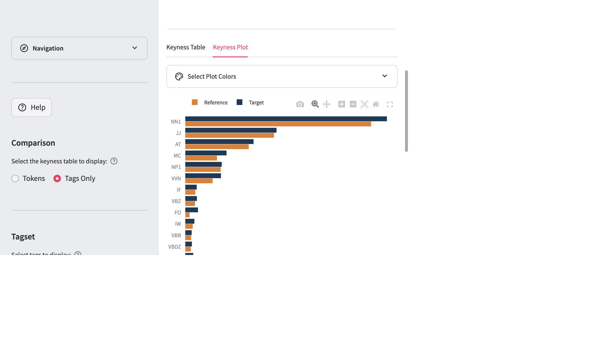

2 Passive Constructions Across Disciplines
2.1 Overview
This vignette demonstrates how DocuScope CA can be used to investigate grammatical constructions across a large, discipline-diverse corpus. The central question is whether passive voice — a construction widely associated with scientific writing — is distributed evenly across disciplines, or whether its use patterns differ between STEM and humanities/social science writing.
The workflow introduces two key features:
- The Parts-of-Speech (POS) tagset (CLAWS7), which enables grammatical analysis beyond what the DocuScope rhetorical categories capture
- The Clusters tool, which counts n-gram sequences anchored to a specific word or tag — ideal for finding grammatical constructions like be + past participle
Corpus used: E_ELSEVIER (Internal corpora, Large Dictionary)
Use case: A linguist or writing researcher wants to understand how disciplinary conventions shape grammatical choices in published academic prose.
2.2 Step 1: Load the Corpus
Navigate to Manage Corpus Data and load the E_ELSEVIER corpus from the Internal corpora collection.
The Internal corpora are pre-processed and ready for immediate analysis. No file uploads or tagging steps are required.
Select E_ELSEVIER from the dropdown, ensure the Large Dictionary model is selected, and click Process Target.
The corpus summary will confirm:
Number of part-of-speech tokens in corpus: 2,182,822
Number of DocuScope tokens in corpus: 1,807,275
Number of documents in corpus: 400This corpus comprises 400 journal articles drawn from 20 academic disciplines (20 articles per discipline), spanning fields from Biochemistry and Chemical Engineering to Arts, Sociology, and Nursing.
2.2.1 Process Metadata
When prompted about document categories, select Yes and click Process Document Metadata. This will assign each document to its disciplinary category, enabling the comparison analysis in a later step.
In this workflow, metadata means document-level labels extracted from the filenames, not additional grammatical annotation. For E_ELSEVIER, the filename prefix identifies the disciplinary category for each article.
Processing metadata makes those discipline labels available as grouping variables throughout the app. That is what enables the later comparison between STEM and humanities/social science groupings in Compare Corpus Parts.
The metadata will identify 20 categories: ARTS, BIOC, BUSI, CENG, CHEM, COMP, DECI, ECON, ENGI, ENVI, HEAL, IMMU, MATE, MATH, MEDI, NEUR, NURS, PHYS, PSYC, SOCI.
2.3 Step 2: Explore Tag Frequencies
Navigate to Tag Frequencies and click Tags Table in the sidebar. Toggle to Parts-of-Speech and select Specific to view individual CLAWS7 tags.
The table ranks tags by absolute frequency. In the E_ELSEVIER corpus, the most frequent tags are unsurprisingly NN1 (singular common nouns, AF=417,727), JJ (adjectives, AF=195,125), and NN2 (plural nouns, AF=170,075) — consistent with the heavy noun-phrase structure of academic prose.
Scrolling further down reveals VVN (past participle of lexical verbs):
| Tag | AF | RF | Range |
|---|---|---|---|
| VVN | 68,215 | 3.13 | 100.00% |
VVN appears in every single document in the corpus (Range = 100%), at a rate of approximately 3.13 occurrences per 1,000 words. In CLAWS7, VVN is assigned to past participles of main (lexical) verbs — a form commonly used in passive constructions (e.g., used, found, shown, performed).
VVN is a useful starting signal for investigating passive constructions, but it is not a direct count of passives. Past participles can also appear in non-passive environments, including adjectival uses.
That is why this workflow does not stop at the tag-frequency stage. It uses Clusters in the next step to check which words and tags actually surround VVN, helping distinguish likely passive patterns such as was used or is shown from other participial uses.
DocuScope CA supports two tagsets:
- Parts-of-Speech (CLAWS7): grammatical annotation — identifies word classes like nouns, verbs, adjectives, and specific verb forms like VVN (past participle) or VBZ (is)
- DocuScope: rhetorical/functional annotation — identifies communicative moves like Citation, AcademicTerms, or Reasoning
For studying grammatical constructions like the passive, the POS tagset is the appropriate choice.
2.4 Step 3: Find Passive Patterns with the Clusters Tool
Navigate to N-grams & Clusters and select Clusters from the options at the top of the page.
2.4.1 Configure the Search
Open the Clusters Configuration panel and set:
- Search Mode: Tag
- Tagset: Parts-of-Speech
- Choose a tag: VVN
- Span: 2 (bigrams)
- Position: 2 (VVN in the second slot — showing what precedes it)
By placing VVN at position 2, the tool returns every 2-gram sequence where VVN is the second element. This makes it straightforward to identify be-forms preceding VVN — the structural signature of the passive voice.
This is also why Clusters is more useful here than ordinary n-grams. Rather than listing all common bigrams in the corpus, the cluster search anchors the pattern to one grammatical form of interest and shows what regularly appears around it.
Click Clusters Table in the sidebar to generate the table.
2.4.2 Interpreting the Results
The output ranks clusters by relative frequency (RF, per million words):
| Token_1 | Token_2 | Tag_1 | Tag_2 | AF | RF | Range |
|---|---|---|---|---|---|---|
| was | used | VBDZ | VVN | 600 | 274.87 | 51.50% |
| be | used | VBI | VVN | 495 | 226.77 | 50.25% |
| were | used | VBDR | VVN | 380 | 174.09 | 42.00% |
| as | shown | CSA | VVN | 367 | 168.13 | 34.00% |
| was | found | VBDZ | VVN | 284 | 130.11 | 30.75% |
| is | used | VBZ | VVN | 269 | 123.23 | 31.00% |
| be | seen | VBI | VVN | 264 | 120.94 | 30.25% |
| was | performed | VBDZ | VVN | 244 | 111.78 | 28.00% |
| be | considered | VBI | VVN | 208 | 95.29 | 30.00% |
| been | used | VBN | VVN | 194 | 88.88 | 27.50% |
The top results are dominated by passive constructions. In CLAWS7:
- VBI = infinitive form of be (uninflected: be)
- VBDZ = past tense was
- VBDR = past tense were
- VBZ = third-person singular present is
- VBN = past participle been (used in perfect passives: has been used)
The cluster as shown (Tag_1 = CSA, a subordinating conjunction) is a semi-fixed phrase common in academic writing (as shown in Figure 1), which is also passive in structure though introduced by a conjunction rather than a be-form.
The verb used alone accounts for the three highest-ranked clusters: was used, be used, and were used. This reflects the generic convention in STEM writing of describing methodological choices in passive voice (the method was used to…).
The Range column shows that was used appears in over half of all 400 articles (51.50%), confirming it is one of the most consistent passive constructions in this genre.
You can use the Filter Tag_1 panel above the table to restrict the view to specific preceding tags. For example, selecting VBDZ, VBI, VBDR, VBZ, and VBN isolates all be + VVN passive clusters.
2.5 Step 4: Compare Corpus Parts
The near-universal presence of VVN (Range = 100%) suggests passives are common everywhere in this corpus. But do disciplines differ in how often they use them?
Navigate to Compare Corpus Parts. This tool computes keyness statistics (log-likelihood and log ratio) to identify which linguistic features are significantly more or less frequent in one group of documents compared to another.
Use Compare Corpora when you want to compare two separately loaded corpora. Use Compare Corpus Parts when you want to compare groups within a single corpus after extracting categories from filenames as metadata.
In this workflow, all documents come from E_ELSEVIER. The comparison is between disciplinary groupings inside that one corpus, so Compare Corpus Parts is the appropriate tool.
2.5.1 Select Categories
In the Category Selection panel:
- Target corpus categories: Select all STEM disciplines — BIOC, CENG, CHEM, COMP, ENGI, ENVI, IMMU, MATE, MATH, MEDI, NEUR, PHYS (12 disciplines × 20 docs = 240 documents)
- Reference corpus categories: Select all Humanities and Social Science disciplines — ARTS, BUSI, DECI, ECON, HEAL, NURS, PSYC, SOCI (8 disciplines × 20 docs = 160 documents)
The panel will confirm: Ready to compare 12 target vs 8 reference categories.
Click Keyness Table of Corpus Parts in the sidebar.
2.6.1 Interpreting the Keyness Results
The keyness table (sorted by log-likelihood, descending) shows tags that are significantly over-represented in STEM relative to Humanities/SS. Among the top results:
| Tag | LL | LR | RF (STEM) | RF (Hum/SS) |
|---|---|---|---|---|
| VVN | 1159.02 | 0.38 | 3.51 | 2.70 |
| VBZ | 100.71 | 0.19 | 1.10 | 0.96 |
The VVN tag is the 5th most distinctive POS tag in STEM writing overall (LL = 1159.02, p < 0.01). STEM articles use past participles at an average rate of 3.51 per 1,000 words, compared to 2.70 per 1,000 words in Humanities/SS — a 30% relative increase. The effect size (LR = 0.38) indicates a moderate but highly consistent difference.
VBZ (is) is also key to STEM writing, reflecting the use of present-tense passives (is used, is shown, is calculated) in describing ongoing or generalizable procedures, though its effect is smaller than the contrast for VVN.
All results reported here are significant at p < 0.01. For a corpus of this size, the app restricts the comparison threshold to p < 0.01.
The Keyness Plot (click the Keyness Plot tab) visualizes these differences as paired horizontal bars, with STEM in dark blue and Humanities/SS in orange:

The visual confirms that VVN — along with MC (cardinal numbers) and NNU (unit nouns like ml, kg, °C) — is one of the most distinctively STEM-associated grammatical features in this corpus. The quantitative and passive features cluster together: STEM writing is characterized by numerical precision and impersonal construction in tandem.
2.7 Summary
This vignette demonstrated how to combine two complementary tools in DocuScope CA to investigate a grammatical phenomenon:
- Tag Frequencies (POS) established the baseline prevalence of VVN across the corpus
- Clusters (Tag mode, POS tagset) revealed the specific lexical instantiations of passive constructions (was used, be used, were used, etc.)
- Compare Corpus Parts quantified disciplinary variation, showing that STEM disciplines use passive constructions significantly more often than Humanities and Social Science disciplines
The workflow illustrates a key methodological principle: moving from corpus-level frequency patterns (how common is VVN?) to construction-level patterns (which passives occur?) to contrastive patterns (who uses them more?). The POS tagset makes this kind of grammatical investigation possible in a way that the DocuScope rhetorical tagset — oriented toward communicative functions rather than grammatical form — does not.